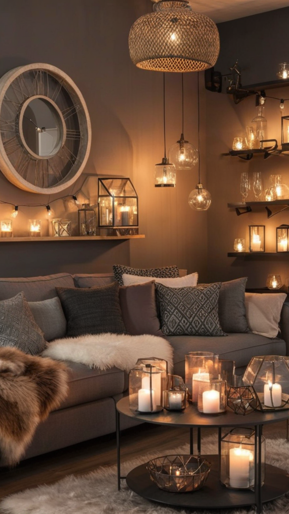
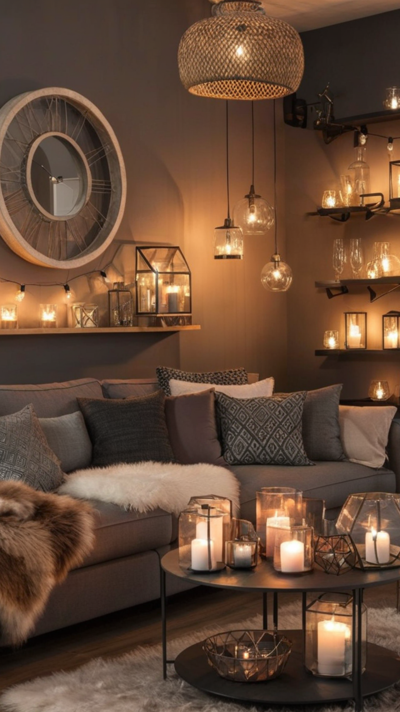

Living Room Decor with a Brown Couch: Stylish and Timeless Ideas
A brown couch is a classic and versatile piece that can anchor your living room decor with warmth and sophistication. Whether you prefer a modern, rustic, or traditional style, a brown couch can seamlessly blend into various aesthetics. Here’s how you can style your living room around a brown couch to create an inviting and stylish space.
1. Choosing the Right Color Palette
The key to complementing a brown couch is selecting the right color scheme. Consider these popular options:
Neutral Tones: Beige, cream, white, and gray create a balanced and airy look.
Earthy Hues: Greens, rust, terracotta, and mustard add warmth and a nature-inspired feel.
Bold Accents: Navy blue, emerald green, or deep burgundy introduce contrast and a touch of drama.
2. Layering with Textures and Fabrics
To enhance the richness of a brown couch, incorporate different textures and fabrics in your decor:
Throw Pillows: Use patterned or textured pillows in complementary shades for depth.
Cozy Throws: A soft knit or faux fur throw draped over the couch adds comfort and style.
Area Rugs: Choose a rug with intricate patterns or solid neutral colors to tie the space together.
3. Selecting Complementary Furniture
When pairing furniture with a brown couch, balance is key:
Wooden Furniture: Lighter wood tones (oak, maple) brighten the space, while darker woods (walnut, mahogany) enhance its coziness.
Metallic Accents: Gold, brass, or black metal finishes add a touch of modern elegance.
Glass Elements: A glass coffee table can introduce an airy and contemporary feel.
4. Enhancing with Wall Decor and Artwork
Your wall decor plays a crucial role in harmonizing the look:
Gallery Wall: Mix framed artwork, mirrors, and decorative pieces for visual interest.
Large Statement Art: A bold, oversized painting or print above the couch can serve as a focal point.
Shelving Units: Floating shelves with books, plants, and decor items offer both function and style.
5. Illuminating the Space with Lighting
Proper lighting enhances the ambiance of your living room:
Floor Lamps: A sleek floor lamp beside the couch adds both style and function.
Table Lamps: Place decorative table lamps on side tables for a cozy glow.
Pendant or Chandelier: A statement light fixture can bring sophistication to the entire space.
6. Adding Greenery for a Fresh Touch
Plants breathe life into your living room and complement the warmth of a brown couch:
Tall Indoor Plants: Consider fiddle-leaf figs, snake plants, or palms for a dramatic effect.
Tabletop Plants: Small potted plants on coffee tables or shelves add freshness.
Hanging Planters: Utilize hanging plants to introduce a touch of nature without taking up floor space.
Final Thoughts
Decorating with a brown couch allows for endless styling possibilities. By balancing colors, textures, and accessories, you can create a space that feels warm, inviting, and timeless. Whether you opt for a minimalist look or a cozy, layered design, a brown couch serves as the perfect foundation for a stylish living room.

 
